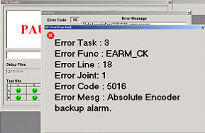
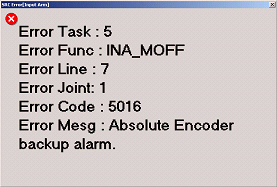
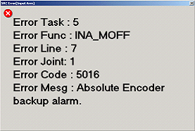
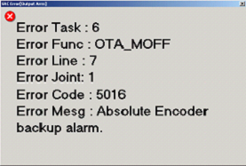
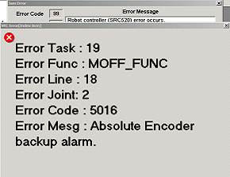

Service History
Subject: NS-8040 Encoder backup alarm error
Handler Model: NS-8040 (S/N: 181394)
Controller: RC520
Date: 14 April 2008
Symptom
HDD unabled to load into Windows so HMI also cannot load, screen black out during loading Windows.
Use Recovery CD FD06S081 Ver1.0 to recover Windows, HMI Ver 1.0 and SPEL CT 3.11d, encountered encoder alarm backup error.
In HMI, Error 5016 Absolute Encoder backup alarm were encountered, below HMI status windows shows "Please Restart HMI".
In SPEL CT, bottom right of screen, robot 1 to robot 6 show Motor as ???.
|
 |
 |
|
 |
 |
|
 |
|
Action
Initialise Absolute Motor in SPEL CT by clicking [Setup]->[Robot Manipulator]->[Reset Enc] tab. Tick the Joint to initialize and click [Reset Enc] button. However, still Encoder Backup Alarm error.
In SPEL CT, bottom right of screen, robot 1 to robot 6 show Motor as ???.
Install SPEL CT 3.11ds, restart RC520.
Restore System data in SPEL CT. No more encoder backup alarm error.
Cause
This error is due software bug in Recover CD FD06S081 Ver1.0.
(Servo motors are absolute but SPEL CT is incremental software)
Remarks
Refer NS-8040 Manual Calibration.
Use Recovery CD FD07S109 ver1.56 (12/11/2007) will also solve Encoder Backup Alarm error as the SPEL CT is 3.11ds is installed during recovery.